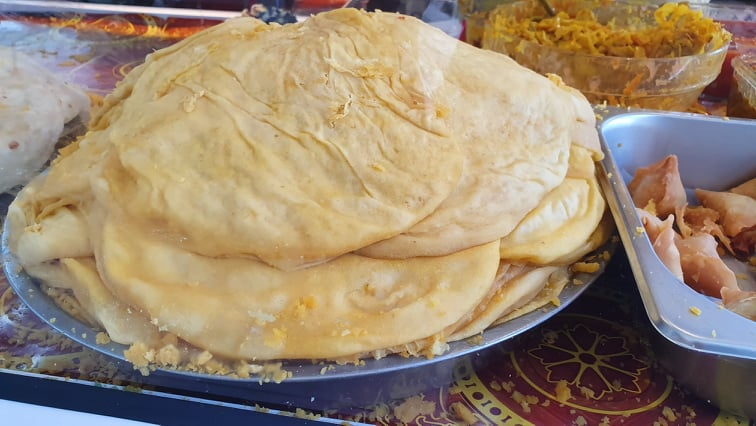

Dholl Puri

Description
Le Dholl Puri est une spécialité très populaire à Maurice : un pain plat garni de pois cassés épicés.
Ingredients
- Pois cassés jaunes – 400 g
- Farine – 500 g
- Eau de cuisson – environ 300 ml
- Cumin en poudre – 1 c. à café
- Curcuma – 1 c. à soupe
- Huile – 1 c. à soupe
- Sel – 1 c. à café
Steps
- Trempage : Trempez les pois cassés dans l’eau pendant 1 heure.
- Cuisson : Égouttez, mettez-les dans une casserole avec 1 c. à café de cumin et faites cuire jusqu’à pouvoir les écraser entre les doigts.
- Égouttage : Conservez l’eau de cuisson et égouttez les pois.
- Mixage : Mixez les pois avec une pincée de sel jusqu’à obtenir une purée homogène.
- Pâte : Mélangez la farine, le sel, le curcuma et l’huile dans un bol. Ajoutez petit à petit l’eau réservée pour former une pâte souple.
- Repos : Pétrissez jusqu’à ce que la pâte se détache des bords, puis laissez reposer 30 minutes.
- Façonnage : Faites des boulettes de pâte. Aplatissez une boule, placez une cuillère de purée au centre, refermez et aplatissez en puri.
- Cuisson des Dholl Puri : Faites cuire sur une poêle huilée à feu moyen, quelques minutes de chaque côté, jusqu’à ce qu’ils soient légèrement dorés.
À servir avec
- Cari gros pois
- Rougaille
- Chutney (de tamarin, de coriandre, etc.)
Home